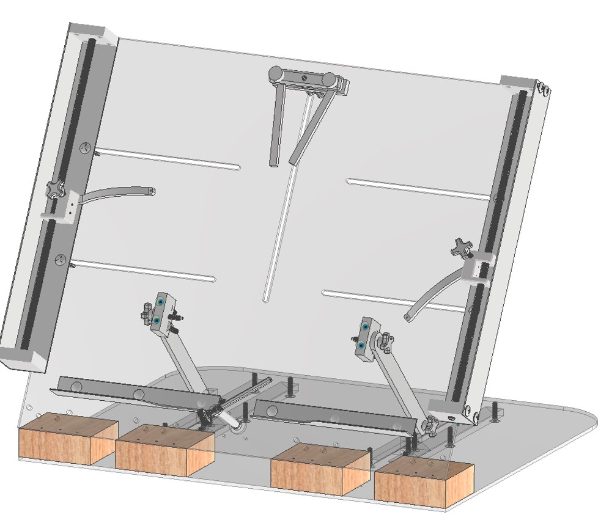

Page Turner | Client: Masonic Village
Tools Used: CAD Software, Arduino, Stepper Motors, Servo Motor, Stepper Motors, TinkerCAD
Project Overview: The Page Turner, an assistive device, is being designed to assist individuals with limited mobility by enabling hands-free page turning. Using Arduino-controlled stepper and servo motors, the device aims to provide a reliable solution for turning book pages, allowing users to engage in reading independently. The design incorporates feedback from potential users to ensure it meets functional and accessibility needs.
Project Objectives
- Design for Accessibility: Develop a mechanism that caters to individuals with varying levels of motor ability, prioritizing ease of use.
- Create a Precision Mechanism: Ensure that the device can handle pages of different thicknesses with gentle, controlled movements.
- Incorporate User Feedback: Focus on a user-centered design to create a practical and effective solution for independent reading.
Project Outcomes
Currently in the design phase, expected outcomes through design phase include:
- Prototype Development: A fully functioning prototype that effectively turns pages using automated controls.
- User Testing and Iteration: Feedback-based improvements to optimize performance, usability, and durability.
- Enhanced Accessibility: A tool that fosters greater independence for individuals with physical limitations, contributing to an improved reading experience